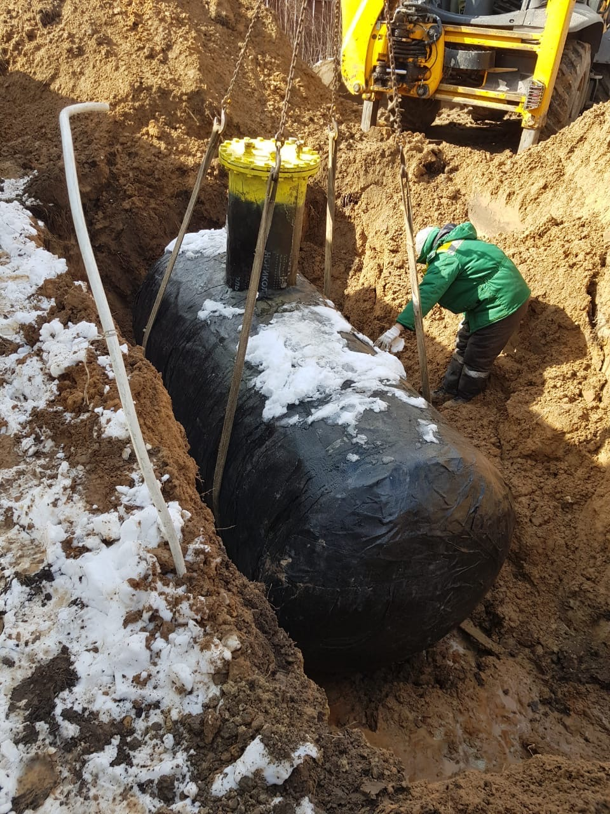

Магистраль значительно удалена, альтернативным решением становится газгольдер. Зачем это нужно? По трем причинам: удобство, экономичность и экология. Конечно, отапливать дом можно углем, мазутом, дизельным топливом или даже дровами.
Если из перечисленного есть варианты сравнимые по стоимости, то точно не экологические. Доставка газа осуществляется специальными газовозами, которые закачивают его в резервуар. Объем нужного газгольдера рассчитывают исходя из размеров дома.
Преимущества владения газгольдером в личном хозяйстве очевидны, нам лишь остается констатировать факты:
Установить газгольдер на участке не так сложно, но главное правильно подобрать место на участке, где будет расположена емкость для хранения газа, правильно и безопасно ее установить, закрепить к бетонному основанию.
Для этого в зависимости от объема газгольдера выкапывается котлован на глубину не промерзания грунта, дно котлована засыпается песком 20-30 см, выравнивается.
Автономная газификация — это абсолютно независимая от центральных коммуникаций, система газоснабжения, в основу которой входит газгольдер (емкость для хранения сжиженного газа), от которой проложен подземный или надземный трубопровод (газопровод) к источнику потребления газа (газовый котел, газовый водонагреватель, газовый электрогенератор).
Для того что бы правильно подобрать объем газгольдера для Вашего дома, дачи, коттеджа или какого то другого строения Вам необходимо понимать что расход газа на 1 кв.м. в год примерно 21 литр. Из это следует к примеру что для отопления дома площадью 150 кв.м. необходимо 3150 литров (21 литр * 150 кв.м. = 3150 литров) так же если Вы будете использовать систему и для газовой плиты то к запасу нужно прибавить еще 20%. Помните что любая газовая емкость заправляется под 85% от общего объема.
Для того что бы определить как часто нужно заправлять газгольдер нужно произвести расчет для каких целей Вы его используете. Средний расход одного газового прибора можно узнать исходя из технической документации (паспорт) прибора. В среднем если Вы планируете использовать систему в качестве отопления и горячего водоснабжения то Вам необходимо 21 литр сжиженного газа на 1 квадратный метр в год, т.е. если дом площадь которого составляет 135 квадратных метров то в год Вам понадобится не менее 2835 литров (135кв.м.*21л=2835л/год). Из этого нужно понимать что для дома площадью 135 кв.м. необходим газгольдер объемом не менее чем 3500 литров, так как полезный объем данной емкости составляет 2975 литров или 85%. В таком случае Вам потребуется 1 заправка в год.
Многие потенциальные заказчики интересуются вопросом необходима ли регистрация газгольдера, устанавливаемого или уже установленного на участке в государственных органах надзора.
Установленный на Вашем участке газгольдер представляет собой капитальное строение, которое входит в комплекс индивидуального домовладения, является установкой коммунально-бытового назначения для автономного газоснабжения Вашего дома и не предназначен для производственной или иной коммерческой деятельности. Более того, на физических лиц не распространяется действие ПБ 12-609-03 (Приказ Ростехнадзора от 01.08.2006 N 738). Цитата: п1.1.5. Правила не распространяются на: системы автономного отопления и горячего водоснабжения административных, общественных и бытовых зданий с котлами, теплогенераторами, без выработки тепловой энергии для производственных целей, предоставления услуг и (или) при суммарной тепловой мощности установленного оборудования 100 кВт и менее.
В силу п. 6.2.3 Правил устройства и безопасной эксплуатации сосудов, работающих под давлением, утвержденных постановлением Госгортехнадзора № 91 от 11.06.2003г. регистрация сосудов производится на основании письменного заявления владельца. Закрытый список владельцев, которые обязаны зарегистрировать газгольдер, установлен п. 6 приложения 1 вышеназванных Правил. В соответствии с данным списком регистрация газгольдера осуществляется в случае его владения организацией или индивидуальным предпринимателем.
В силу п.1 Положения о Федеральной службе по экологическому и технологическому и атомному надзору, утвержденному постановлением Правительства Российской Федерации № 401 от 30 июля 2004г. (в ред. Постановлений Правительства РФ от 21.01.2006 N 23, от 14.12.2006 N 767, от 29.05.2008 N 404, от 07.11.2008 N 814, от 27.01.2009 N 43, от 08.08.2009 N 649) Федеральная служба по экологическому, технологическому и атомному надзору (Ростехнадзор) не осуществляет функции по контролю и надзору в сфере безопасности бытовых установок и сетей.
На основании вышеизложенного, резервуар (сосуд для хранения СУГ), расположенный на Вашем земельном участке, не подлежит регистрации в Ростехнадзоре